Inside the
Exhibition
Live performances and music videos
A running selection of live performances and music videos spanning Machel's career, playing on screens as you enter.
Origins and history
Miracle birth
November 24, 1974. One month early. Winston and Elizabeth Montano were told there was no fetal heartbeat. And then, a cry. With the help of the doctor, Machel Jesus Montano came into the world. “You have a boy!” “From that moment, I knew Machel had purpose. I knew he was a gift,” Elizabeth Montano remembers. A life called to lead.
Family history
A pictorial representation of both Machel's biological and chosen family who shaped his artistic development over four and a half decades. Alongside his immediate family, his parents and brother Marcus, is his chosen extended family: his community.
Evolution of soca
Calypso is a distinct Caribbean genre that blends French, Venezuelan, African and American influences. It dominated the regional music scene throughout the 1950s, 60s and 70s. In the 1970s, artists such as Lord Shorty fused Indian and African rhythms to create a new genre, soca. Machel began his calypso career in 1982 at the age of seven, and quickly proved himself a formidable talent. Over the next four and a half decades, he transitioned into soca, where he has continued to thrive and redefine the sound.
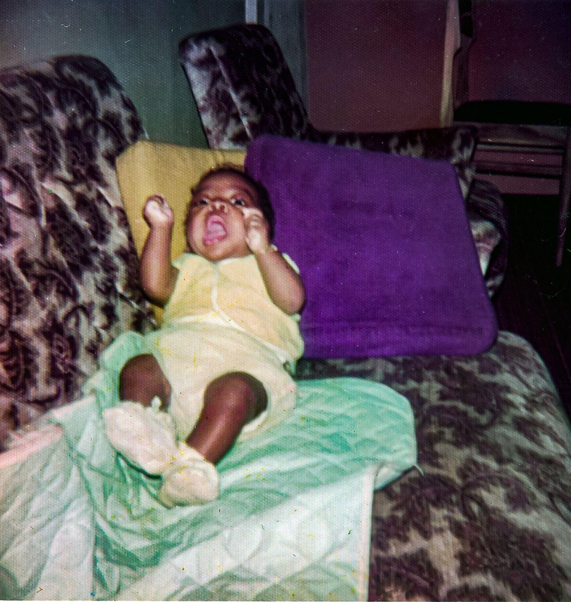
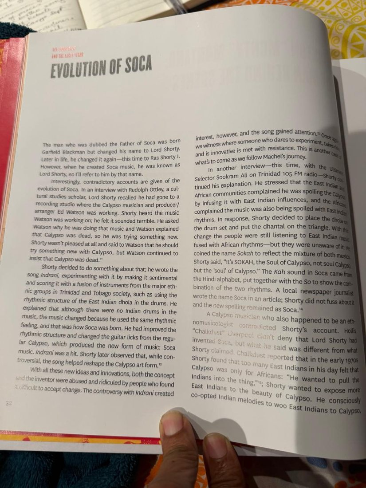
Trinidad and Tobago: Land of the Hummingbird
The hummingbird
The hummingbird holds the spirit of our ancestors and is associated with life, love, beauty, joy and freedom. It embodies joy, resilience and emotional renewal. As an energetic messenger of beauty and wisdom, it brings blessings and teaches harmony with nature. The hummingbird is a powerful reminder to stay present and savor life's sweetness. In essence, it represents emotional strength, adaptability and the wisdom of living fully in the present moment.
Land of the hummingbird
The Amerindians, the indigenous people, originally named the island of Trinidad “Iëre,” which translates to “Land of the Hummingbird.” It is also known as “Kairi.”
Trinidad and Tobago coat of arms
Hummingbirds are prominently featured on the central shield of the Republic of Trinidad and Tobago Coat of Arms in honor of the nation's rich biodiversity. Their presence references the historic name for Trinidad, Iëre or Kairi, loosely translated as Land of the Hummingbird.
Rezzarek
Rezzarek premiered as AC - Razzerek in February 2007 at the Hasely Crawford Stadium, Port of Spain. It was presented again as 25th Anniversary - Rezzarek on March 23rd, 2007 at Madison Square Garden, New York. The two shows were more than a year-long celebration of the talent and artistry of soca artist Machel Montano HD. They were a hallmark portrayal of Trinidad and Tobago culture, mas, music, dance and song, and a resurrection of it all. Produced by Peter Minshall, the shows centered around the hummingbird, a key socio-historical symbol of Trinidad and Tobago. The theme was designed to evoke the nostalgia of our wondrous festival, Carnival.
The crown
The hummingbird crowns were commissioned by mas man Peter Minshall and fashion designer Meiling. Machel and Renée were crowned with the hummingbird crowns as the prince and princess of the Land of the Hummingbird during their wedding ceremony at the Hasely Crawford National Stadium.
The medal
Machel received the Gold Hummingbird Medal recognizing him for loyal, devoted and outstanding service to the nation. Arts and culture: for exceptional contribution to national music, the steelpan movement, and local entertainment.
Peter Minshall: the master of mas
Peter Minshall is a legend. Widely called the Master of Mas, he changed carnival in Trinidad and Tobago forever. He won Band of the Year a record five times. But more than trophies, Minshall transformed mas. He turned it from street party into performance, art, theatre, and storytelling.
He calls mas “theatre for the people”. It's not just about partying. It's about Trinidad. About history. About African roots, spirituality, and telling our story through movement, color, and massive moving sculpture.
His vision went far beyond the Savannah. Minshall has designed three Olympic Opening Ceremonies, and his work is held in fine art collections around the world. Through kinetic sculpture, myth, and masquerade, Peter Minshall gave the world a new language for carnival, one rooted in Trinidad, but speaking to everyone.
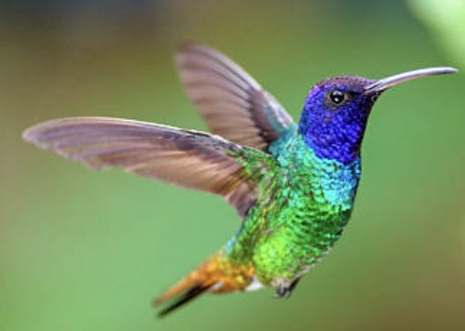
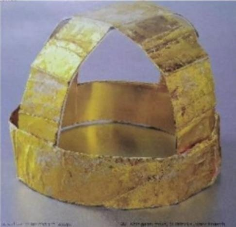
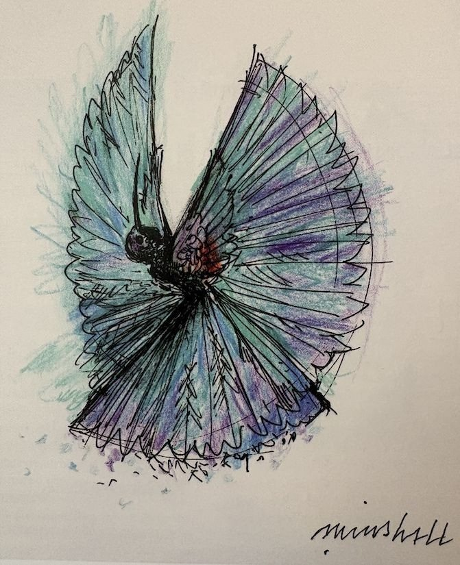
Like Ah Boss: the two costumes
“Like Ah Boss” music video costume, 2015
Designers: Tamo Ennis and Marlon “Daww” George Fabrication: Marlon “Daww” George Footwear: custom black, gold-plated Versace shoes
This black and gold military-inspired ensemble was created for the official “Like ah Boss” music video. Filmed at Ato Boldon Stadium, Couva, the video featured 200 performers including the Trinidad and Tobago Defence Force, a marching band, and gymnasts.
The design channels authority, precision, and rhythm. The tailored black base with gold trim, paired with a maroon beret, references military marching band aesthetics, a visual echo of the song's commanding energy. The custom gold-plated Versace footwear completes the statement of power. This costume represents Montano at the height of the “Like ah Boss” era, using uniform and regalia to embody leadership on and off the stage.
“Like Ah Boss” Soca Monarch costume, 2015
Designers: Tamo Ennis and Marlon “Daww” George Fabrication: Marlon “Daww” George Headwear: red beret · Footwear: custom-painted red Nike MAG sneakers Restoration 2026: The Lost Tribe Atelier, Valmiki Maraj and Janelle McLean
This regal gold and red ensemble with red beret was worn for International Soca Monarch 2015. It was conceived as Montano's final competition performance, as he announced his retirement from competition to focus on collaboration within the industry.
The custom-painted red Nike MAG sneakers, originally the Back to the Future “Nike MAG”, were customized to match the costume's bold color story and stage presence. Due to damage sustained during the performance, the costume was conserved and restored in 2026 by The Lost Tribe Atelier.
Both costumes are featured in the official “Like ah Boss” documentary.
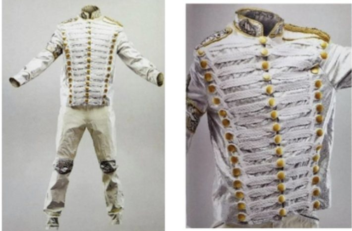
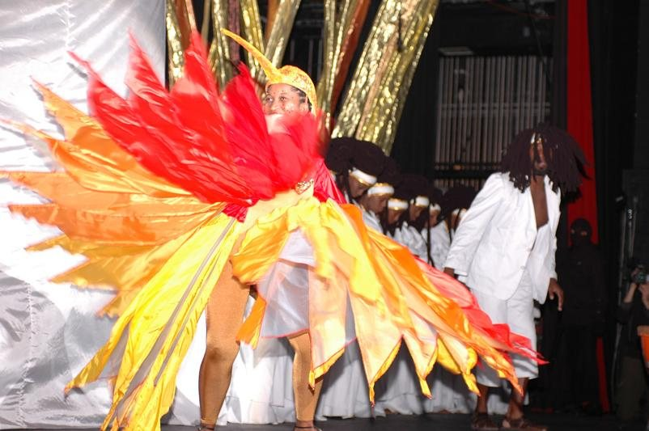
The lyric books
These five volumes trace the evolution of Machel's career from calypso to soca. Bringing together more than four decades of music, 1982 to 2026, this box set was created by a team of Trinidadian women to reflect both the creativity and the growth of Machel as an artist and as a human being.
Each book is covered in shibori-pattern fabric, printed in Machel's handwriting, and handbound. The inner cover features a timeline of Machel's major achievements over the years.
Team: Rae, Simone, Aneakaleigh, Akhela, Ayrïd, Maya, Lady, and Gillian
The evolution of the equipment
From cassette and floppy disk to the studio rack: the recording and performance equipment that carried the music across four and a half decades. A recorded voiceover from Machel will accompany this section.
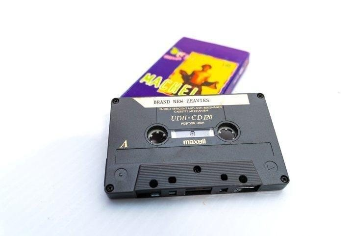
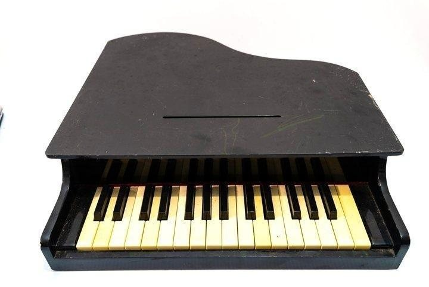
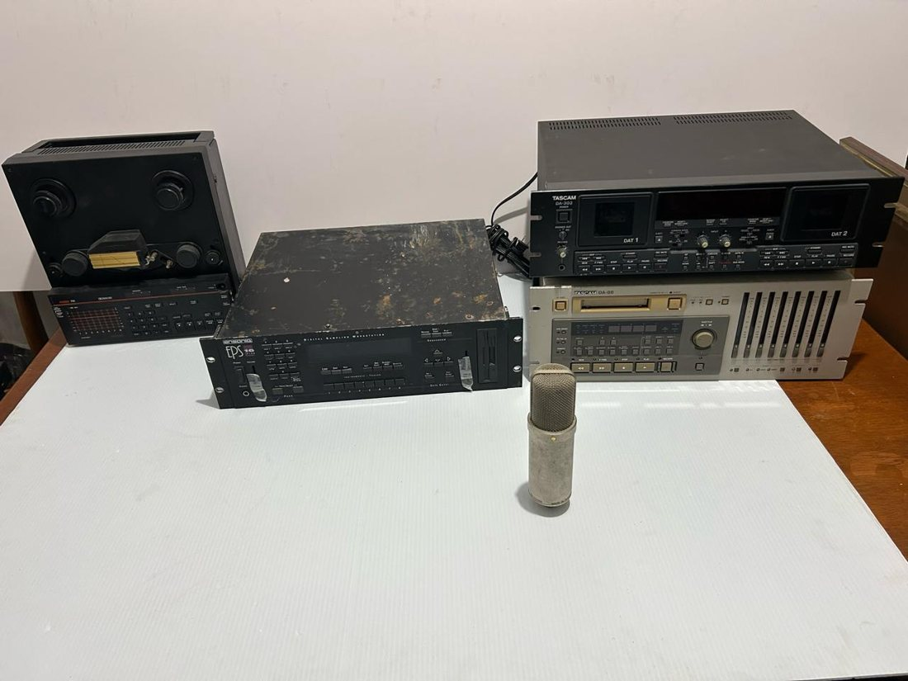
The digital archive
A curated cut of interviews, music videos, and behind the scenes material from the wider digital archive will be available through use of QR codes on site.
The vinyl collection
Machel's vinyl collection will be available for listening at the Library's vinyl listening station.
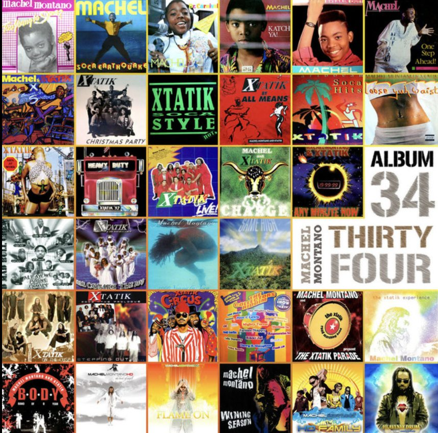
On the turntable
- 1986Too Young to Soca
- 1987Soca Earthquake
- 1988Dr. Carnival
- 1989Katch Ya!
- 1990Breaking Out
- 1991In Time
- 1991One Step Ahead!
- 1992Machel & Xtatik: Amount ah Sweetness
- 1992Xtatik: Christmas Party
- 1993Xtatik: Soca Style
- 1994Xtatik: By All Means
- 1995Loose Yuh Waist
- 1995Come Dig It
- 1996Xtatik: Men at Work
- 1997Heavy Duty
- 1997Xtatik Live!
- 1998Machel & Xtatik: Charge
- 1998D Mad Bull Crew Vol 1
- 1998Hard Working Dog
- 1999Rubber Waist / Powder Puff
- 1999Any Minute Now
- 1999Mad Bull Crew Vol 2: All Ah We Is 1 Family
- 2000Xtatik & The Mad Bull Crew: Here Comes the Band
- 20002000 Young to Soca
- 2001Same High
- 2026Encore
Physical display
The physical displays showcase select costumes, awards, certificates, art and press from throughout Machel's career.
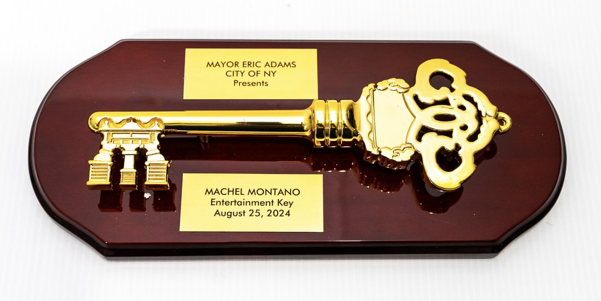
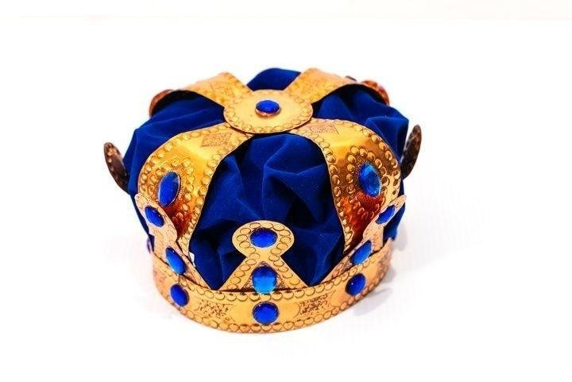
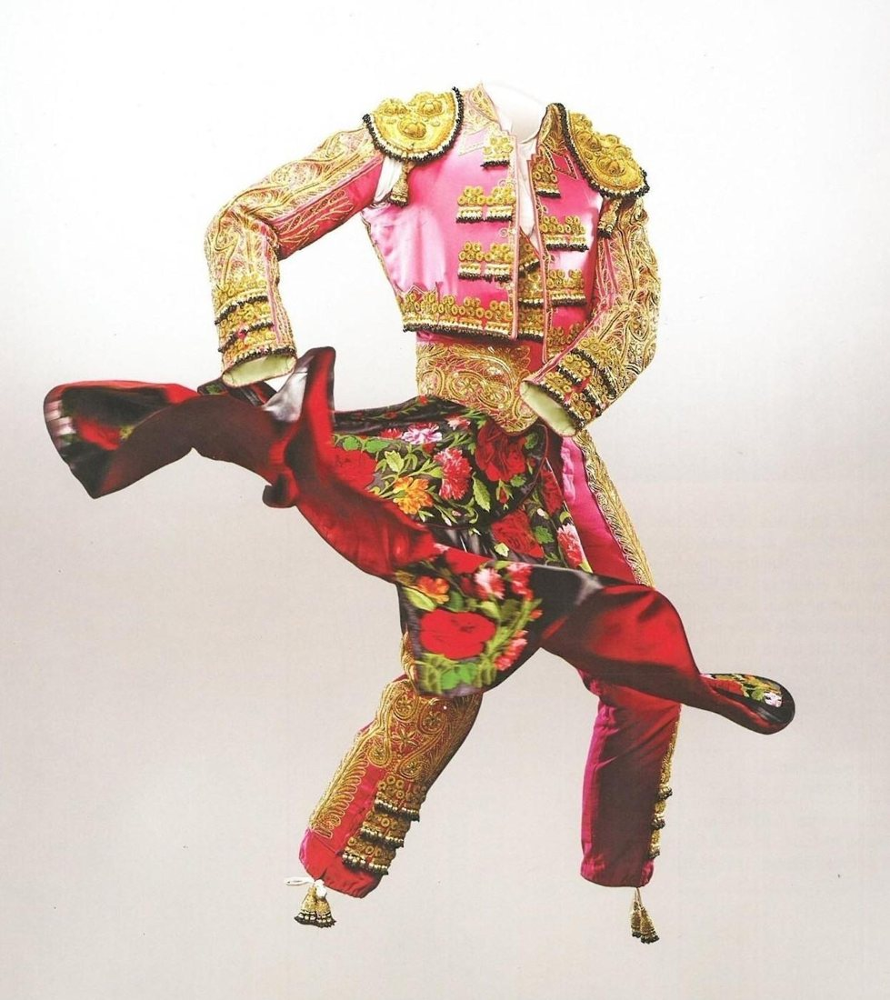
Brooklyn and the five eras
Machel's eras are displayed on a wall in the Library, tracing the journey from the early years in Trinidad and Tobago through Brooklyn and out to the world. New York City, and Brooklyn in particular, launched Machel Montano's international career. Across a 44-year journey, the borough he briefly called home, and the largest Caribbean community outside of the West Indies, became the engine of soca music's growth.
- 1982–1996The Early Years
- 1997–2006Winer Boi Era
- 2007–2014The HD Era
- 2015–2022The Monk Evolution Era
- 2023–2026A New Beginning
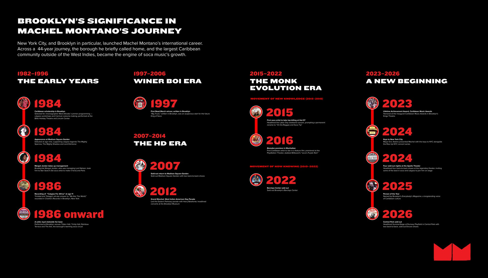
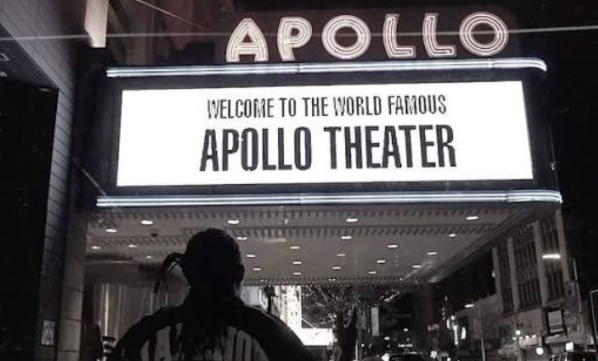
Books and merchandise
Books and merchandise from Machel's own collection and limited edition BPL x Machel merch will be available for sale at various events.
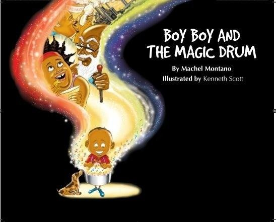
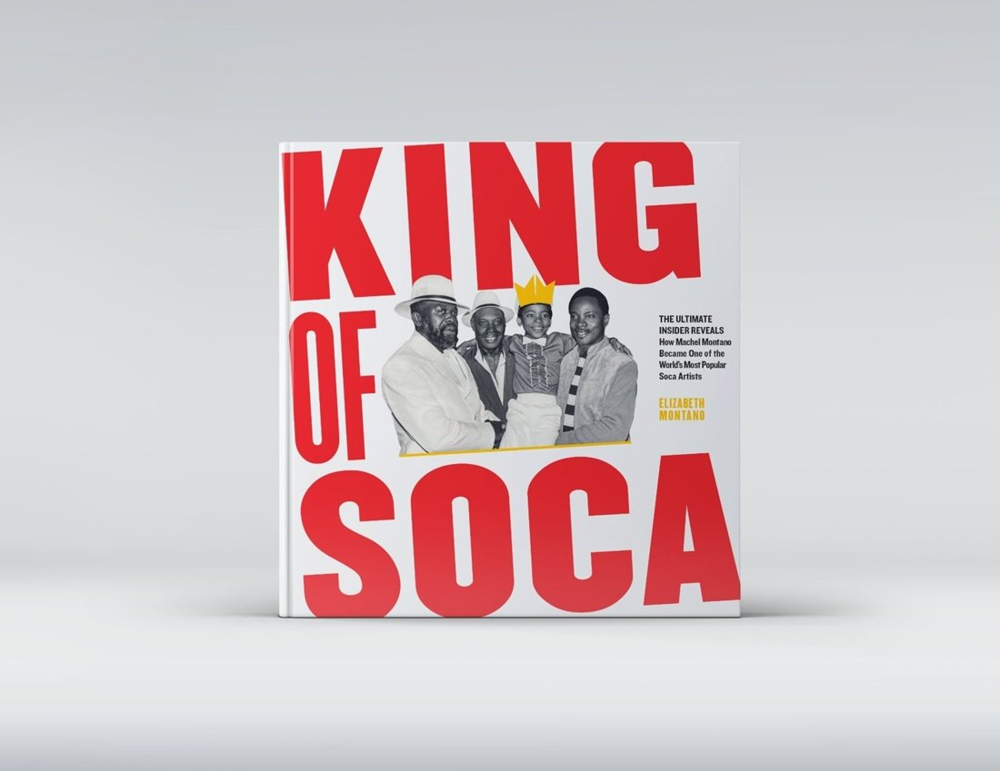
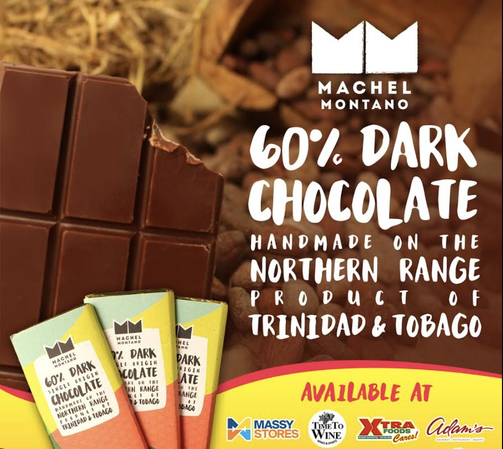